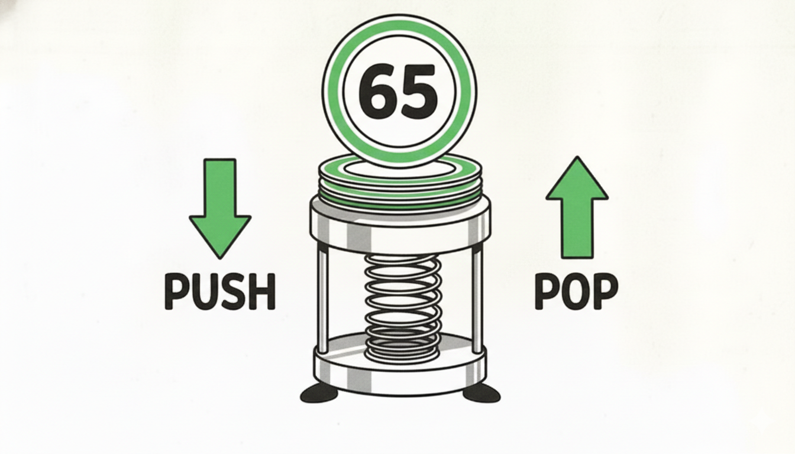
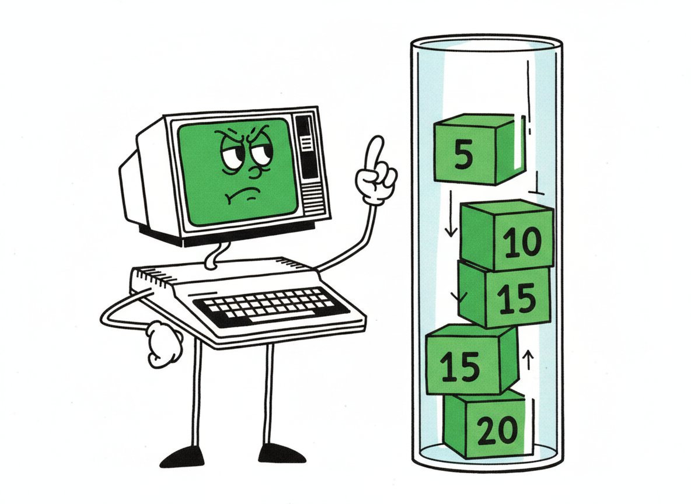

Forth was invented in the late 1960s by Charles Moore. He designed it to run on small, slow hardware — which makes it a perfect fit for your CoCo.
Forth is a programming language unlike anything you've probably seen. It doesn't have variables you have to declare, or complex syntax rules to memorize. Instead, it has one simple idea at its center — an idea so useful that once you understand it, writing programs feels almost like stacking blocks.
That idea is the stack.
Before you write a single Forth program, you need to understand the stack. Once you do, everything else will follow naturally. This whole chapter is about getting comfortable with it — and the best part is, you'll already be writing programs by the end.

You've seen a stack of plates in a cafeteria — a spring-loaded dispenser where clean plates sit in a tall column. You can do exactly two things with it:
That's all. You can't reach in and grab a plate from the middle. You can't slide one in at the bottom. Only the top is ever accessible.
Forth's stack works exactly the same way — except instead of plates, it holds numbers. When you type a number in a Forth program, it gets pushed onto the stack. When a word needs a number to work with, it pops it off the top.
Numbers go on the stack. Forth words take numbers off the stack, do something with them, and may put results back on.
The top of the stack is always where the action is.
Forth programmers use a shorthand to describe what each word does to the stack. It looks like this:
EMIT ( c -- )
The parentheses contain a stack effect. The items to the
left of -- are what the word takes off the stack before
it runs. The items to the right are what it leaves behind when it's
done. EMIT ( c -- ) means: "EMIT takes one item (a
character code) and leaves nothing."
The letter c is just a reminder that the number
is being treated as a character. Forth doesn't enforce types —
it's just a convention to help you remember.
You'll see this notation for every new word we introduce. It's one of the things that makes Forth readable once you get used to it.
The first word you're going to use is EMIT. It pops a
number off the stack and shows the corresponding character on your
CoCo's screen.
What number corresponds to what character? The answer is ASCII — a standard numbering for letters, digits, and symbols that most computers use. The letter A is 65. B is 66. Z is 90. Space is 32. You don't need to memorize the whole table — we'll show you a better way in a moment.
Here's a complete Forth program:
65 EMIT HALT
Read it left to right: push 65 onto the stack, then run
EMIT (which pops 65 and shows A), then
run HALT (which stops the program).
That's it. That's the whole program.
Save that as hello.fs, compile and run it, and your
CoCo's screen will show:
One letter. Top-left corner of the screen. Exactly what we asked for.
HALT must appear at the end of
every top-level program. Without it, the CoCo will keep running past
the end of your code — into whatever random bytes happen to be in
memory. That rarely ends well.
If you haven't set up your tools yet, see the project README for instructions on installing lwasm and XRoar.
Unlike Color BASIC, Forth on your CoCo works in two steps. First, you write your program on a modern computer and compile it. Then you load the result onto your CoCo (or into XRoar) and run it.
Compiling and running a Forth program for the CoCo actually involves three separate steps: building the kernel (once), running the cross-compiler, and launching XRoar with the right flags. That's a lot to type every time you want to try something.
We've wrapped all three steps into a single script:
forth/run.sh. Here's the full script so you can
see exactly what it does — nothing is hidden:
# Build kernel if needed, compile .fs → .bin, launch XRoar # Full source: forth/run.sh if [ ! -f kernel/build/kernel.map ]; then (cd kernel && make) # assemble the kernel (once) fi python3 tools/fc.py "$SRC" \ --kernel kernel/build/kernel.map \ --kernel-bin kernel/build/kernel.bin \ --output "${SRC%.fs}.bin" xroar -machine coco2bus \ -bas ~/.xroar/roms/bas12.rom \ -extbas ~/.xroar/roms/extbas11.rom \ -run "${SRC%.fs}.bin"
For every example in this book, you'll use it like this:
./forth/run.sh hello.fs
Now for the fun part. What if you wanted to show the letter
B instead of A? B is ASCII code 66.
You could just write 66 EMIT HALT — but here's the
Forth way to think about it: B is one more than A.
65 1 + EMIT HALT
The word + pops two numbers off the stack, adds them,
and pushes the result. So this program:
651+ pops both, pushes 66EMIT pops 66, shows BStack effect of +: ( n1 n2 -- sum )
That might seem like a roundabout way to get B. But this kind of thinking — describing things as operations on previous results — is exactly how Forth programs grow. You'll see why it's powerful in the chapters ahead.
CHAR only works at compile time — inside your
.fs file. It reads the very next word and turns
it into its ASCII value before the program runs.
Memorizing ASCII codes is tedious. Forth gives you a much nicer way
to write character literals: the word CHAR.
CHAR A EMIT HALT
CHAR A pushes the ASCII value of A
(which is 65) onto the stack. It's exactly the same as writing
65 — but you don't have to look up the number.
You can combine CHAR with arithmetic:
CHAR A 3 + EMIT HALT
What does that show? A is 65, plus 3 is 68, which is D. Try it and confirm for yourself.
What about two characters?
CHAR H EMIT CHAR I EMIT HALT
Each EMIT advances the cursor one position to the right.
So the characters appear side by side. Simple as that.

It helps to picture the stack as a column of boxes, with the
top always on the left in Forth's notation. Here's what happens
when we run 65 1 + EMIT, step by step:
| Step | Stack (top → bottom) |
|---|---|
| start | ( empty ) |
| after 65 | 65 |
| after 1 | 1 65 |
| after + | 66 |
| after EMIT | ( empty ) |
Notice how + consumes two items and leaves one. And
EMIT consumes one and leaves nothing. A well-written
Forth program always cleans up after itself — the stack should be
empty (or predictable) when the program ends.
CHAR Z 1 + EMIT HALT display?
Make a guess first, then try it. (Hint: what comes after Z
in the ASCII table?)
CHAR 0 and arithmetic.
( before -- after )
Items left of -- are consumed. Items right of -- are produced.
n = any number
c = character code
The stack: push and pop
ASCII character codes
Write–Compile–Run loop
Stack effects